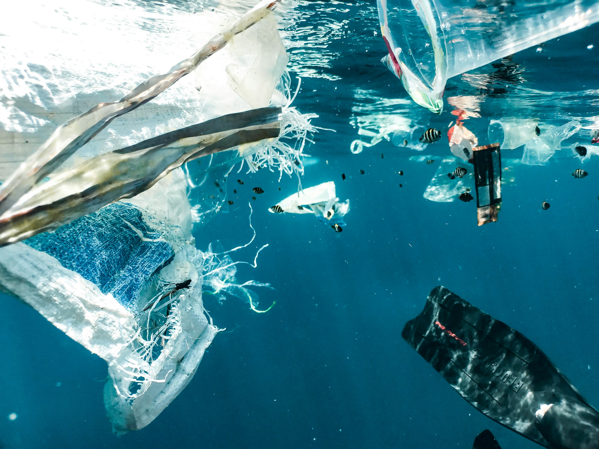

emoji_objects
Solução
beach_access
Praias
sentiment_satisfied
Beneficios
person
Entrar
A doença dos Ocêanos

E que aproximadamente 80% de todo lixo marinho tem origem em terra?
Você sabia que 80% do lixo nos oceanos é composto por plástico, sobretudo sacolas e garrafas?